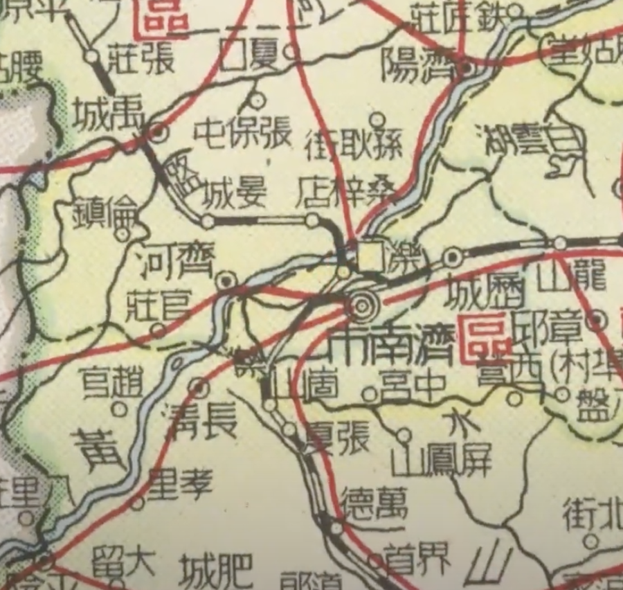

老刘家的起源
作者： 刘恩涛
我爷爷叫刘嗣河（字海东），排行老二，出生在1915年(民国四年，乙卯年),阴历八月十四（公历9月22日）。他大哥（也就是我大爷爷）叫刘嗣汉，他三弟（也就是我三爷爷）叫刘嗣江。再往上的祖先，由于年代久远且缺乏文字资料，很遗憾已经无从考证。
刘家的祖籍为原属山东省德州市齐河县的桑梓店，现在桑梓店已经划归济南市境内。津浦铁路要过黄河由于在泺口最适合修桥，所以没有取直南下，而是向东绕了一个弯。这样从济南到桑梓店就可以坐火车。见下图

来自1950年出版的中国地图
由于桑梓店在黄河北面，我大爷，姑姑，爸爸都习惯把老家叫作『河北』，也就是黄河北面的意思。